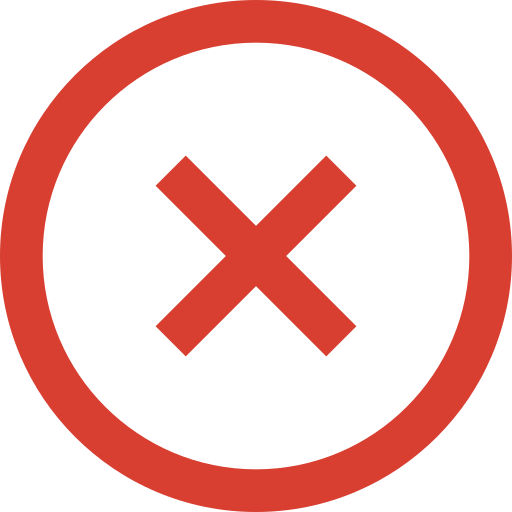

We're sorry, you lost!!!
Congratulations, you won!!!

Mayın Tarlası kuralları oldukça basittir. Oyun tahtası hücrelere bölünmüş ve mayınlar rastgele dağıtılmıştır. Kazanmak için mayın içeren tüm hücreleri açmanız gerekiyor. Bir hücredeki sayı, etrafındaki mayın sayısını gösterir. Bu bilgiyi kullanarak güvenli hücreleri ve mayın içeren hücreleri belirleyebilirsiniz. Mayın olduğu şüphelenilen hücreler, sağ fare tuşunu kullanarak kırmızı bir bayrak ile işaretlenebilir. Mayın içeren bir hücre sol fare tuşuyla açılırsa oyun kaybedilir!
Minesweeper rules are very simple. The board is divided into cells, with mines randomly distributed. To win, you need to open all the cells that contain mines. The number on a cell shows the number of mines adjacent to it. Using this information, you can determine cells that are safe, and cells that contain mines. Cells suspected of being mines can be marked with a red flag using the right mouse button. If a cell containing a mine is opened with the left mouse button, the game is lost!
0